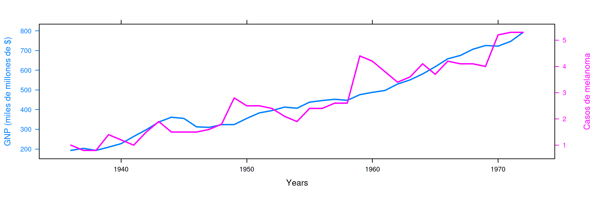
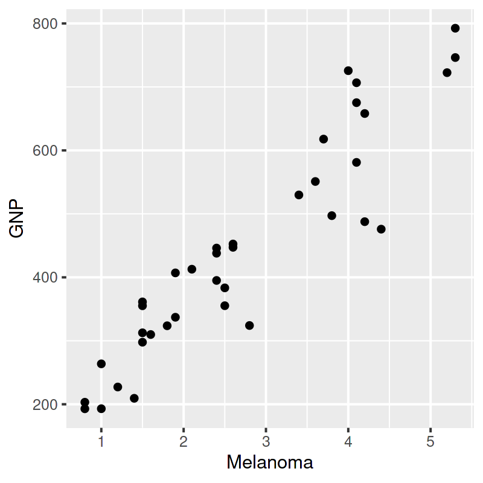
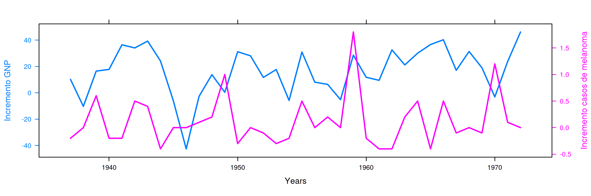
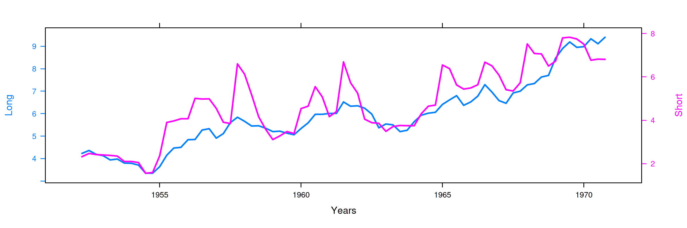
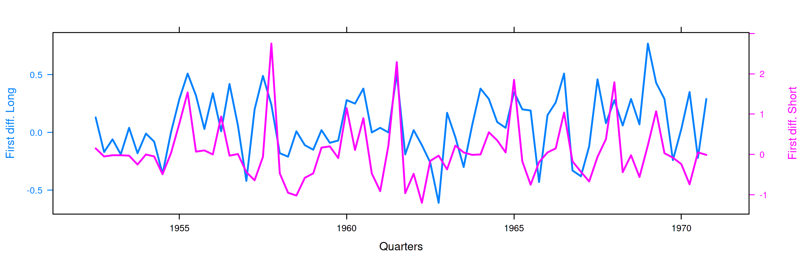
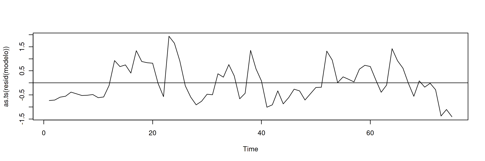

Econometría Aplicada. Lección 3
Table of Contents
En esta lección se discutirá la posible relación entre correlación y causalidad. Veremos casos de correlación espuria (correlación sin causalidad) y una introducción a la cointegración (con un caso en el la correlación no desaparece al diferenciar las series). Como novedad usaremos R.
Carga de algunas librerías de R
Primero cargamos la librería tfarima (Repositorio Cran:
https://cran.r-project.org/web/packages/tfarima/index.html;
repositorio GitHub: https://github.com/gallegoj/tfarima)
library(tfarima) # librería de José Luis Gallego para Time Series library(latticeExtra) # para gráficos con doble eje vertical (doubleYScale) library(readr) # para leer ficheros CSV library(ggplot2) # para el scatterplot (alternaticamente library(tidyverse)) library(jtools) # para representación resultados estimación library(zoo) # para generar objetos ts (time series)
y además fijamos los parámetros por defecto para las figuras en png
del notebook
# fijamos el tamaño de las figuras que se generan en el notebook options(repr.plot.width = 12, repr.plot.height = 4, repr.plot.res = 200)
1. Correlación
La correlación entre dos muestras de tamaño \(N\) (dos vectores de datos de \(\mathbb{R}^N\)) es el coseno del ángulo formado los vectores de dichos datos en desviaciones respecto a sus correspondientes medias. \[\rho_{\boldsymbol{x}\boldsymbol{y}}=\frac{\sigma_{\boldsymbol{x}\boldsymbol{y}}}{\sigma_{\boldsymbol{x}}\sigma_{\boldsymbol{y}}}\]
Por tanto la correlación es algún valor entre \(-1\) y \(1\).
- Si la correlación es \(1\) significa que \(\;\boldsymbol{y}-\boldsymbol{\bar{y}}\;\) es \(\;a(\boldsymbol{x}-\boldsymbol{\bar{x}})\;\) para algún \(a\) positivo
- Si la correlación es \(-1\) significa que \(\;\boldsymbol{y}-\boldsymbol{\bar{y}}\;\) es \(\;a(\boldsymbol{x}-\boldsymbol{\bar{x}})\;\) para algún \(a\) negativo
- Cuando la correlación es \(0\) el vector \(\;\boldsymbol{y}-\boldsymbol{\bar{y}}\;\) es perpendicular al vector \(\;\boldsymbol{x}-\boldsymbol{\bar{x}}\;\)
1.1. La causalidad y correlación
Cuando existe relación causal entre variables sus muestras suelen estar correladas.
- Número de horas de sol tiene correlación positiva con la temperatura ambiente
- La altitud de una localidad (o su latitud) tiene una correlación negativa con la temperatura ambiente
Pero correlaciones significativas no indican la existencia de relaciones causales.
- En una playa: consumo de helados y ataques de tiburón a los bañistas
1.2. Correlación espuria
La correlación entre variables sin relación causal se denomina correlación espuria.
- Que haya correlación espuria no significa que "en realidad no hay correlación".
- Que haya correlación espuria significa que es erróneo interpretar que dicha correlación se debe a una relación causal.
Puede ser que una causa común induzca la correlación entre ambas variables
- consumo de helados y venta de bañadores
Puede ser que no exista causa alguna y aún así haya correlación
- Un ejemplo
- Otro
- Más ejemplos aquí
1.3. Las series con tendencia suelen presentar elevadas correlaciones.
1.3.1. Ejemplo de correlación espuria: PNB vs incidencia de melanoma
data_frame <- read_csv('datos/GNPvsMelanoma.csv',show_col_types = FALSE) head(data_frame, 3)
| obs | GNP | Melanoma |
|---|---|---|
| <dbl> | <dbl> | <dbl> |
| 1936 | 193.0 | 1.0 |
| 1937 | 203.2 | 0.8 |
| 1938 | 192.9 | 0.8 |
# se pueden graficar dos columnas de un data_frame al mismo tiempo kk <- xyplot(GNP + Melanoma ~ obs, data_frame, type="l") # Se agrega dos ejes Y. Se construye cada serie por separado obj1 <- xyplot(GNP ~ obs, data_frame, type = "l" , lwd=2, ylab="GNP (miles de millones de $)", xlab="Years") obj2 <- xyplot(Melanoma ~ obs, data_frame, type = "l", lwd=2, ylab="Casos de melanoma") # --> se realiza la grafica con el segundo eje Y doubleYScale(obj1, obj2, add.ylab2 = TRUE)
Serie anual (1936–1972) del PNB anual USA en miles de millones de dólares corrientes e incidencia de melanoma en la población masculina de Connecticut.

# transitoriamente cambio el tamaño de la siguiente figura options(repr.plot.width = 4, repr.plot.height = 4, repr.plot.res = 100) ggplot(data_frame, aes(x = Melanoma, y = GNP)) + geom_point() options(repr.plot.width = 12, repr.plot.height = 4, repr.plot.res = 200)
La correlación es \(0.93\) (debido a que ambas series presentan una tendencia creciente)

Si regresamos el PNB sobre la incidencia de casos de melanoma obtenemos un excelente ajuste (coef. de determinación de \(0.87\) y coeficientes muy significativos).
Ello no significa que el modelo tenga alguna capacidad explicativa o predictiva (pues la incidencia de melanoma en Connecticut no hace crecer la economía de EEUU).
MODEL INFO:
Observations: 37
Dependent Variable: GNP
Type: OLS linear regression
MODEL FIT:
F(1,35) = 231.84, p = 0.00
R² = 0.87
Adj. R² = 0.87
Standard errors: OLS
--------------------------------------------------
Est. S.E. t val. p
----------------- -------- ------- -------- ------
(Intercept) 118.57 23.73 5.00 0.00
Melanoma 118.98 7.81 15.23 0.00
--------------------------------------------------
1.4. Una manera de ver que la correlación es posiblemente espuria (que no hay causalidad)
Si fuera cierto que \[ \boldsymbol{y}=\beta_1 \boldsymbol{1} + \beta_2 \boldsymbol{x} + \boldsymbol{u} \] Entonces también sería cierto que \[ \nabla\boldsymbol{y}= \beta_2 \nabla\boldsymbol{x} + \nabla\boldsymbol{u} \]
# creamos un objeto ts ("time series") datos_ts <- as.ts( read.zoo( data_frame ) ) # creamos dos nuevas series temporales con las primeras diferencias de las columnas "GNP" y "Melanoma" de datos_ts d_GNP = diff(datos_ts[,"GNP"]) d_Melanoma = diff(datos_ts[,"Melanoma"])
# creamos un nuevo data frame con las primeras diferencias DF.diferencias = data.frame(date = zoo::as.Date(time(d_GNP)), d_GNP = as.matrix(d_GNP), d_Melanoma = as.matrix(d_Melanoma)) head(DF.diferencias, 2)
| date | d_GNP | d_Melanoma | |
|---|---|---|---|
| <date> | <dbl> | <dbl> | |
| 1 | 1937-01-01 | 10.2 | -0.2 |
| 2 | 1938-01-01 | -10.3 | 0.0 |
# gráfico conjunto con dos columnas del data frame DF.diferencias kk <- xyplot(d_GNP + d_Melanoma ~ date, DF.diferencias, type="l") obj1 <- xyplot(d_GNP ~ date, DF.diferencias, type = "l" , lwd=2, ylab="Incremento GNP", xlab="Years") obj2 <- xyplot(d_Melanoma ~ date, DF.diferencias, type = "l", lwd=2, ylab="Incremento casos de melanoma") doubleYScale(obj1, obj2, add.ylab2 = TRUE)

Sin embargo, al realizar la regresión de la primera diferencia de
GNP sobre la primera diferencia de Melanoma obtenemos un ajuste
pésimo (tan solo la constante es significativa… ¡cuando en teoría \(\beta_1=0\)!).
# resultados del ajuste MCO entre d_GNP y d_Melanoma summ( lm(d_GNP ~ d_Melanoma) )
MODEL INFO:
Observations: 36
Dependent Variable: d_GNP
Type: OLS linear regression
MODEL FIT:
F(1,34) = 0.01, p = 0.92
R² = 0.00
Adj. R² = -0.03
Standard errors: OLS
------------------------------------------------
Est. S.E. t val. p
----------------- ------- ------ -------- ------
(Intercept) 16.57 3.18 5.21 0.00
d_Melanoma 0.71 6.59 0.11 0.92
------------------------------------------------
2. Cointegración
- Informalmente, una serie temporal es integrada de orden \(d\), (ó
\(I(d)\)) si \(d\) es el mínimo número de diferencias ordinarias
necesarias para lograr la estacionariedad en media.
- Consecuentemente, una serie estacionaria en media es \(I(0)\).
En ocasiones una combinación lineal de series \(I(d)\) (i.e., series con el mismo orden de integración) resulta ser integrada con un orden menor a \(d\); entonces se dice que están cointegradas:
\(\boldsymbol{x}\), \(\boldsymbol{y}\) y \(\boldsymbol{z}\) están cointegradas si son \(I(d)\) y existen \(a\), \(b\), \(c\) tales que \[a\boldsymbol{x}+b\boldsymbol{y}+c\boldsymbol{z}\quad\text{es cointegrada de orden $d-m$},\] con \(m>0\;\) (se dice que tienen \(m\) relaciones de integración).
Para estimar la relación de cointegración, se ajusta una regresión lineal entre las variables potencialmente cointegradas y se evalúa la estacionariedad o el orden de integración de los residuos
- La situación más habitual es tener dos series \(\boldsymbol{x}\) e \(\boldsymbol{y}\) que son \(I(1)\) y encontrar por MCO un \(\hat{\alpha}\) tal que \(\boldsymbol{y}-\hat{\alpha}\boldsymbol{x}\) es \(I(0)\).
La cointegración entre series temporales suele tener dos interpretaciones relacionadas entre sí:
- Las series poseen una tendencia común (pues hay una combinación lineal entre ellas que cancela dicha tendencia)
- Existe un equilibrio a largo plazo entre dichas series, de manera que las desviaciones del equilibrio tienden a desaparecer a corto plazo
2.1. Ejemplo de series cointegradas: tipos de interes en UK a corto y largo plazo
# leemos los datos cuartrimestales como un objeto zoo UK_zoo <- read.csv.zoo("datos/UK_Interest_rates.csv", FUN = as.yearqtr, format = "%YQ%q", strip.white = TRUE) head(UK_zoo,3)
Long Short
1952 Q2 4.23 2.32
1952 Q3 4.36 2.47
1952 Q4 4.19 2.42
# creamos un data frame a partir de UK_zoo (data frame para la figura de doble eje) UK_df = fortify.zoo(UK_zoo) head(UK_df,3)
| Index | Long | Short | |
|---|---|---|---|
| <yearqtr> | <dbl> | <dbl> | |
| 1 | 1952 Q2 | 4.23 | 2.32 |
| 2 | 1952 Q3 | 4.36 | 2.47 |
| 3 | 1952 Q4 | 4.19 | 2.42 |
# creamos un ts (time series) a partir de UK_zoo por conveniencia UK_ts = as.ts(UK_zoo) head(UK_ts,3)
| Long | Short |
|---|---|
| 4.23 | 2.32 |
| 4.36 | 2.47 |
| 4.19 | 2.42 |
kk <- xyplot(Long + Short ~ Index, UK_df, type="l") obj1 <- xyplot(Long ~ Index, UK_df, type = "l" , lwd=2, ylab="Long", xlab="Years") obj2 <- xyplot(Short ~ Index, UK_df, type = "l", lwd=2, ylab="Short") doubleYScale(obj1, obj2, add.ylab2 = TRUE)
Long- rendimiento porcentual a 20 años de los bonos soberanos del Reino Unido
Short- rendimiento de las letras del tesoro a 91 días
(Muestra: 1952Q2–1979Q4)

La correlación es \(0.898\) (ambas series poseen una tendencia creciente… veamos si dicha tendencia es común a ambas)
cor(UK_df$Long, UK_df$Short)
0.89764827721203
# creamos dos nuevas series temporales con las primeras diferencias d_Long = diff(UK_ts[,"Long"]) d_Short = diff(UK_ts[,"Short"])
# creamos un nuevo data frame con las primeras diferencias UK_df.diferencias = data.frame(date = zoo::as.Date(time(d_Long)), d_Long = as.matrix(d_Long), d_Short = as.matrix(d_Short)) head(UK_df.diferencias, 2)
| date | d_Long | d_Short | |
|---|---|---|---|
| <date> | <dbl> | <dbl> | |
| 1 | 1952-07-01 | 0.13 | 0.15 |
| 2 | 1952-10-01 | -0.17 | -0.05 |
# gráfico con las primeras diferencias de los tipos de interésframe DF.diferencias kk <- xyplot(d_Long + d_Short ~ date, UK_df.diferencias, type="l") obj1 <- xyplot(d_Long ~ date, UK_df.diferencias, type = "l" , lwd=2, ylab="First diff. Long", xlab="Quarters") obj2 <- xyplot(d_Short ~ date, UK_df.diferencias, type = "l", lwd=2, ylab="First diff. Short") doubleYScale(obj1, obj2, add.ylab2 = TRUE)

La regresión de la primera diferencia de Short sobre la primera
diferencia de Long NO sugiere que la correlación sea espuria:
obtenemos un ajuste razonable con una pendiente muy significativa y
una constante NO significativa.
# resultados del ajuste MCO summ( lm(d_Short ~ d_Long) )
MODEL INFO:
Observations: 74
Dependent Variable: d_Short
Type: OLS linear regression
MODEL FIT:
F(1,72) = 20.11, p = 0.00
R² = 0.22
Adj. R² = 0.21
Standard errors: OLS
------------------------------------------------
Est. S.E. t val. p
----------------- ------- ------ -------- ------
(Intercept) -0.03 0.08 -0.35 0.72
d_Long 1.26 0.28 4.48 0.00
------------------------------------------------
Hagamos la regresión de los tipos a corto plazo sobre los tipos a largo plazo (en niveles)
modelo <- lm(UK_df$Short ~ UK_df$Long) # ajuste MCO summ( modelo ) # resultados del ajuste
MODEL INFO:
Observations: 75
Dependent Variable: UK_df$Short
Type: OLS linear regression
MODEL FIT:
F(1,73) = 302.85, p = 0.00
R² = 0.81
Adj. R² = 0.80
Standard errors: OLS
------------------------------------------------
Est. S.E. t val. p
----------------- ------- ------ -------- ------
(Intercept) -1.17 0.35 -3.34 0.00
UK_df$Long 1.00 0.06 17.40 0.00
------------------------------------------------
El ajuste es muy bueno, y los parámetros muy significativos. Veamos si los residuos parecen la realización de un proceso estacionario (en la jerga habitual… "veamos si los residuos son estacionarios")
plot(as.ts(resid(modelo))) abline(0,0)

Aparentan ser "estacionarios en media" (i.e., no se aprecia una tendencia evidente); por lo que los tipos de interés a corto y largo plazo podrían estar cointegrados.
Más adelante veremos test estadísticos (Dickey-Fuller y KPSS) que contrastan la estacionariedad (si son \(I(1)\) o \(I(0)\)).